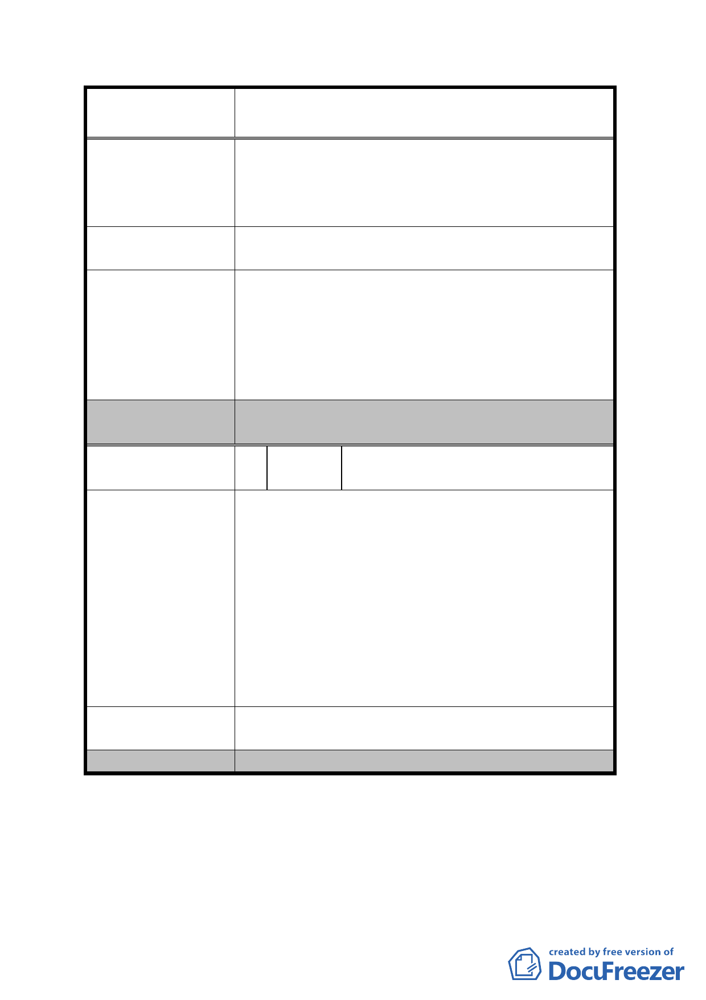

案名
變更臺北市內湖區蘆洲里附近部分工業區為
保護區、住宅區及道路用地主要計畫案
段 116、116-1 號)將作為工業使用，且法拍時為第
二種工業區，今因本案將修訂為保護區，影響權益
甚鉅；另本用地法拍取得時仍有建物及堆置物品將
於 98 年 10 月 15 日完全點交。
建
議
辦
法
本 2 地號仍維持原核定之使用分區第二種工業區，
本人將作為工業使用。
有關變更為保護區土地仍建議維持原工業區使用一
節，經檢視該等土地屬於山坡地範圍且位於崩塌區及
發展局回應意見
軟弱地盤等環境感地區，且平均坡度超過 30%以上，
故劃設為保護區，地主仍可依本市土地使用分區管制
規則之保護區相關規定作較低度之開發利用，以維坡
地安全及水土保持。
委員會決議
取消原計畫公開展覽範圍內住宅區及保護區劃設
之構想，將全區變更為科技工業區。
編
號 13
陳情人
王呅、林王靜梅、王朝明、杜惠娟、
王麗娟
1.都市計畫公告於里辦公處而關係人(地主)散落各
地，致地主變成後知後覺，讓地主們只能默認，
屬實不宜。
2.計畫區塊各種地目及編定使用皆不同，卻都要損
陳情理由
失相同 45%之土地，請都發局明察。陳情人所擁
有土地：臺北市內湖區潭美段一小段 111 地號，
地目「建」編定為輕工業區用地。與重劃後土地
之效用並無差異，但卻因市地重劃平白損失 45%
之土地，地主們皆認為不能接受，尚請都發局重
新審議，提高發還地主土地成數至少七成以上。
建
議
辦
法
本 2 地號仍維持原核定之使用分區第二種工業區，
本人將作為工業使用。
委員會決議
同編號 12。
- 25 -